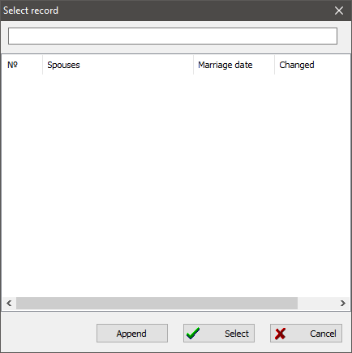

The record selection dialog appears in many places throughout GEDKeeper. Every time you need to add or select one record to or for another you will see this dialog. The record selection dialog has three main functions: select a record having a specific type, filter entries by part of their names, and add a required record if one does not exist.
When the dialog appears, it contains a list of records depending on the record type. When you add a new person record for a parent or child, the dialog shows you all persons available in the database. When you attach an archive to a source, the record selection dialog will contain an archive list. When you add a location for an event, the dialog displays all available locations.
For example, the record selection dialog appears when you edit a person and you need to add a parent to this person. First, it is assumed that the parent has been added already and you might try to find it using filters. When you are sure that the parent person is missing in the database, you can click the "Append" button to add the parent.

See also: Record type.